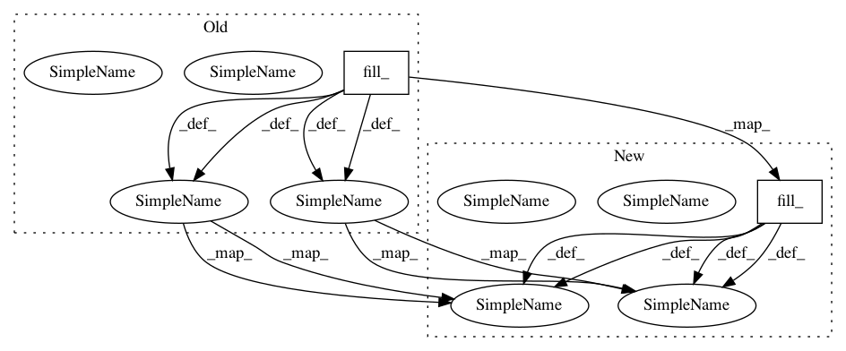

0a8e27413d721bf8d753e5e6061cc24f5bf6474f,train.py,,eval_model,#,489
Before Change
initial_input = Variable(torch.from_numpy(initial_input)).view(
1, 1, hparams.quantize_channels)
else:
initial_input = Variable(torch.zeros(1, 1, 1).fill_(initial_value))
initial_input = initial_input.cuda() if use_cuda else initial_input
// Run the model in fast eval mode
y_hat = model.incremental_forward(
initial_input, c=c, g=g, T=length, softmax=True, quantize=True, tqdm=tqdm,
log_scale_min=hparams.log_scale_min)
if is_mulaw_quantize(hparams.input_type):
y_hat = y_hat.max(1)[1].view(-1).long().cpu().data.numpy()
y_hat = P.inv_mulaw_quantize(y_hat, hparams.quantize_channels)
y_target = P.inv_mulaw_quantize(y_target, hparams.quantize_channels)
elif is_mulaw(hparams.input_type):
y_hat = P.inv_mulaw(y_hat.view(-1).cpu().data.numpy(), hparams.quantize_channels)
y_target = P.inv_mulaw(y_target, hparams.quantize_channels)
else:
y_hat = y_hat.view(-1).cpu().data.numpy()
After Change
initial_input = torch.from_numpy(initial_input).view(
1, 1, hparams.quantize_channels)
else:
initial_input = torch.zeros(1, 1, 1).fill_(initial_value)
initial_input = initial_input.to(device)
// Run the model in fast eval mode
y_hat = model.incremental_forward(
initial_input, c=c, g=g, T=length, softmax=True, quantize=True, tqdm=tqdm,
log_scale_min=hparams.log_scale_min)
if is_mulaw_quantize(hparams.input_type):
y_hat = y_hat.max(1)[1].view(-1).long().cpu().data.numpy()
y_hat = P.inv_mulaw_quantize(y_hat, hparams.quantize_channels)
y_target = P.inv_mulaw_quantize(y_target, hparams.quantize_channels)
elif is_mulaw(hparams.input_type):
y_hat = P.inv_mulaw(y_hat.view(-1).cpu().data.numpy(), hparams.quantize_channels)
y_target = P.inv_mulaw(y_target, hparams.quantize_channels)
else:
y_hat = y_hat.view(-1).cpu().data.numpy()
In pattern: SUPERPATTERN
Frequency: 3
Non-data size: 2
Instances
Project Name: r9y9/wavenet_vocoder
Commit Name: 0a8e27413d721bf8d753e5e6061cc24f5bf6474f
Time: 2018-05-04
Author: zryuichi@gmail.com
File Name: train.py
Class Name:
Method Name: eval_model
Project Name: interactiveaudiolab/nussl
Commit Name: 14e92cdd22a62bb87c8da94f727eb449353436b4
Time: 2020-04-16
Author: prem@u.northwestern.edu
File Name: nussl/ml/unfold/gaussian_mixture.py
Class Name: GaussianMixtureTorch
Method Name: init_params
Project Name: SeanNaren/deepspeech.pytorch
Commit Name: c959d29c381e5bef7cdfb0cd420ddacd89d11520
Time: 2018-07-12
Author: sean.narenthiran@digitalreasoning.com
File Name: model.py
Class Name: MaskConv
Method Name: forward